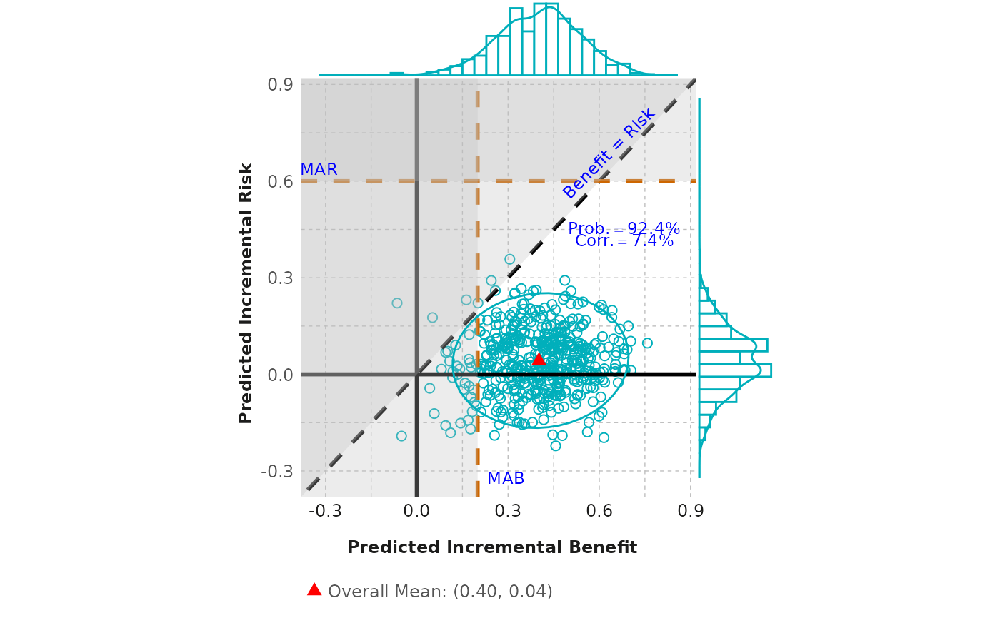

Create a scatterplot from a given dataframe.
scatter_plot.RdCreate a scatterplot from a given dataframe.
Usage
scatter_plot(
df_diff,
outcome,
mab,
mar,
ellipse_type = "t",
ellipse_level = 0.95,
marginal_type = "densigram",
fig_colors = colfun()$fig11_colors
)Arguments
- df_diff
A dataframe containing two vectors, each of which displays the difference between incremental probabilities in active and control effects for a specified outcome.
- outcome
A vector of two strings that describes the two outcomes associated with the difference in active and control effects, where the first outcome corresponds to
diff1and the second todiff2.- mab
A numerical value that specifies the mimimum acceptable benefit.
- mar
A numerical value that specifies the maximum acceptable risk.
- ellipse_type
Type of confidence ellipse. The default "t" assumes a multivariate t-distribution, and "norm" assumes a multivariate normal distribution. "euclid" draws a circle with the radius equal to level, representing the euclidean distance from the center. If ellipse_type = NULL, the confidence ellipse will not be showed.
- ellipse_level
The confidence level at which to draw an ellipse (default is 0.95). If type = "euclid", the radius of the circle to be drawn.
- marginal_type
Type of marginal plot to show. One of: density, histogram, boxplot, violin, densigram (a 'densigram' is when a density plot is overlaid on a histogram). If marginal_type = NULL, the marginal plot will not be showed. By default, densigram is displayed.
- fig_colors
Allows user to change colors of the figure (defaults are provided). Must be a vector of length 3, with the first color corresponding to the scatter plot points, the second corresponding to the overall mean, and third to the written probability text color.
Examples
outcome <- c("Benefit", "Risk")
scatter_plot(scatterplot, outcome, mab = 0.2, mar = 0.6)
